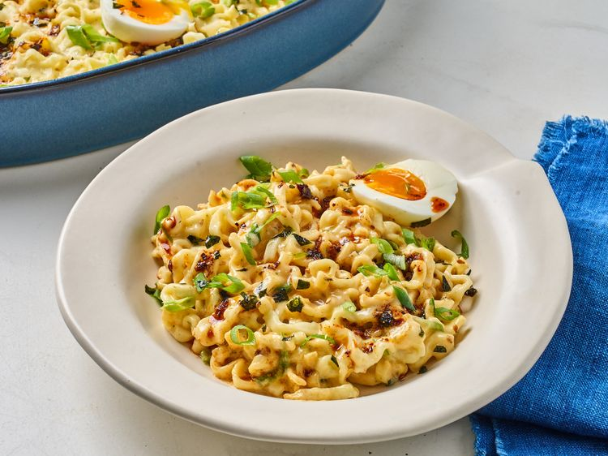

Cheesy Buldak Ramen Casserole

This cheesy Buldak ramen casserole tames
the heat—a little—with the addition of creamy
mozzarella and American cheese. It's a quick and easy bake.
- 3 (4.5 ounce) packages very spicy Korean ramen, such as Buldak® Ramen, reserve seasoning packets, discard sauce packet
- 3 cup water
- 1 1/2 cups shredded creamy mozzarella cheese, divided
- 6 slices American cheese, such as Kraft®
- chili crisp, green onions, soft boiled eggs, furikake, for garnish (optional)
-
1 . Preheat the oven at 375 Degree F (190 C)
-
2 . Combine uncooked ramen, 3 seasoning packets, and 3 cups water in an 8x10-inch casserole dish. Sprinkle evenly with half the mozzarella cheese; top with American cheese slices. Cover with foil.
-
Bake in the preheated oven for 20 minutes.
-
Remove from the oven. Using tongs, gently toss ramen until liquid and cheese are combined.
-
Add remaining mozzarella on top; place back into the oven and bake until cheese is melted, about 5 minutes more.
-
Garnish with green onions, chili crisp, furikake and soft boiled eggs if desired. Serve immediately.
home
back to home for more recipes